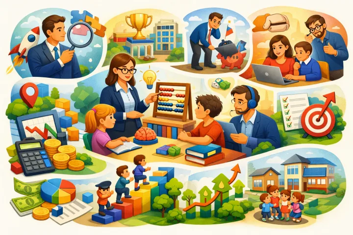
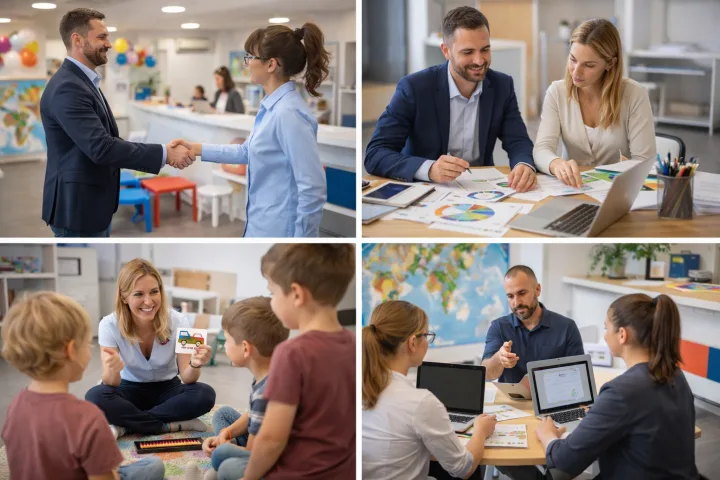
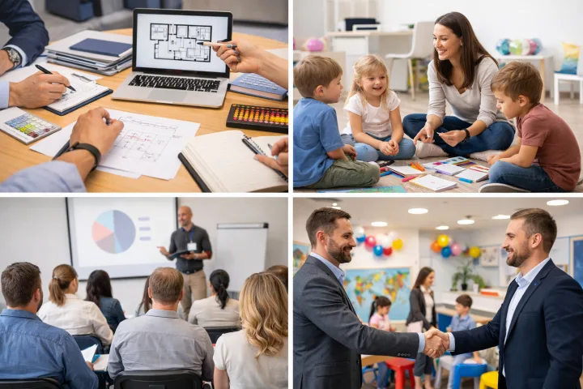
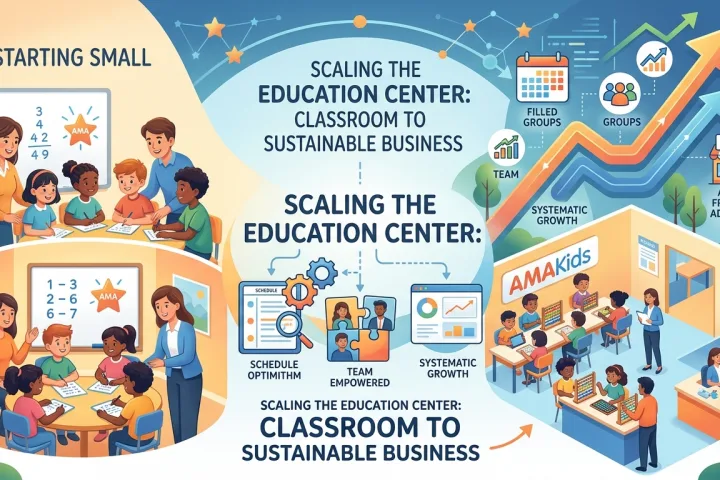
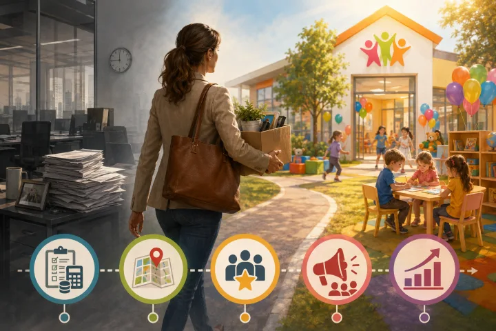

AMAkids · For entrepreneurs
Franchise Guides & Resources
Practical reading for entrepreneurs and education businesses considering a children’s learning center, a new program or regional growth.
About the AMAkids Education Franchise
Opening an Educational Center Without a Teaching Background: How It Works at AMAkids
What an education center owner actually needs to manage — and why teaching experience is not required to build the business.Read moreThe First 6 Months After Launching an AMAkids Center: How Your Business Develops
A practical look at the first groups, early operations and the stages a new education center usually goes through after launch.Read more
What the AMAkids Business Looks Like from the Inside: A Partner’s Path from Launch to a Stable Center
A step-by-step view of the partner journey from preparation and first enrollment to structured day-to-day operations.Read more
Scaling an Educational Center: When a Single Classroom Becomes a Sustainable Business
How to recognize when a learning center is ready to add groups, expand its team and move from owner-led operations to a scalable system.Read more